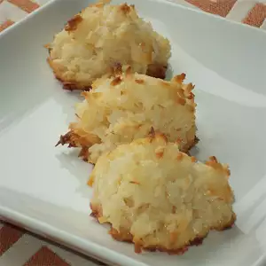

Divine Macaroons

Description
These scrumptious coconut macaroons are very simple to make and only use four ingredients. They are golden and just a little crispy on the outside, soft and chewy inside. Almond extract really brings out the flavor of the coconut. So divine and so easy! I often double this recipe around holiday time because I can't seem to make them fast enough for my coconut lovers!
Ingredients
- 5 ¾ cups unsweetened shredded coconut
- 1 (14 ounce) can sweetened condensed milk
- 2 ½ teaspoons vanilla extract
- 1 ½ teaspoons almond extract
Directions
- Place coconut in a bowl; add sweetened condensed milk, vanilla extract, and almond extract. Mix well. Refrigerate batter for 1 hour.
- Preheat oven to 300 degrees F (150 degrees C). Grease a large baking sheet.
- Loosely mold batter into 2-inch balls and arrange on the prepared baking sheet.
- Bake in the preheated oven until cookies are evenly golden, 10 to 15 minutes. Allow to cool on the baking sheet for 2 minutes before transferring to a sheet of waxed paper to cool completely.
Back